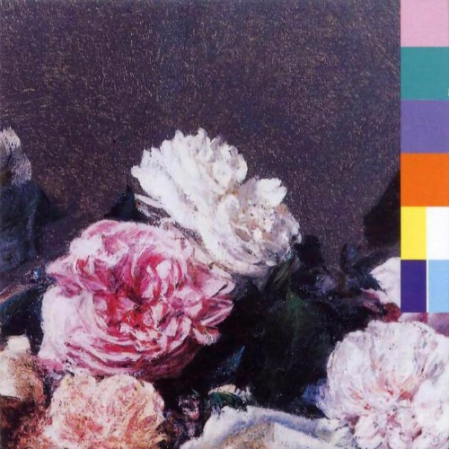
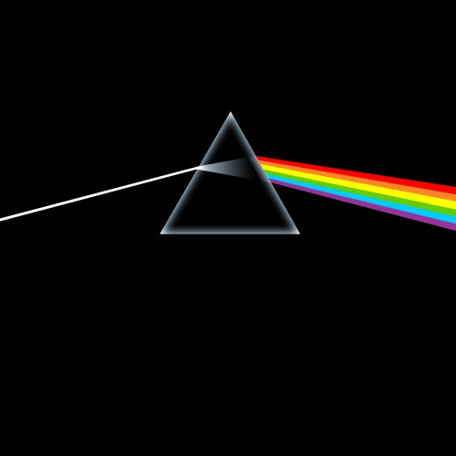

Reviews
The Powers that B
Death Grips

Power, Corruption & Lies
New Order
To Pimp a Butterfly
Kendrick Lamar
Rain Dogs
Tom Waits
The Downward Spiral
Nine Inch Nails

The Dark Side of the Moon
Pink Floyd
Arthur (Or the Decline and Fall of the British Empire)
The Kinks
Ladies and Gentleman We Are Floating In Space
Spiritualized
Dig Your Own Hole
The Chemical Brothers
Bossanova
Pixies
←
1
2
3
…
18
19
20
21
Sign up for monthly Audioxide roundups, if you like.